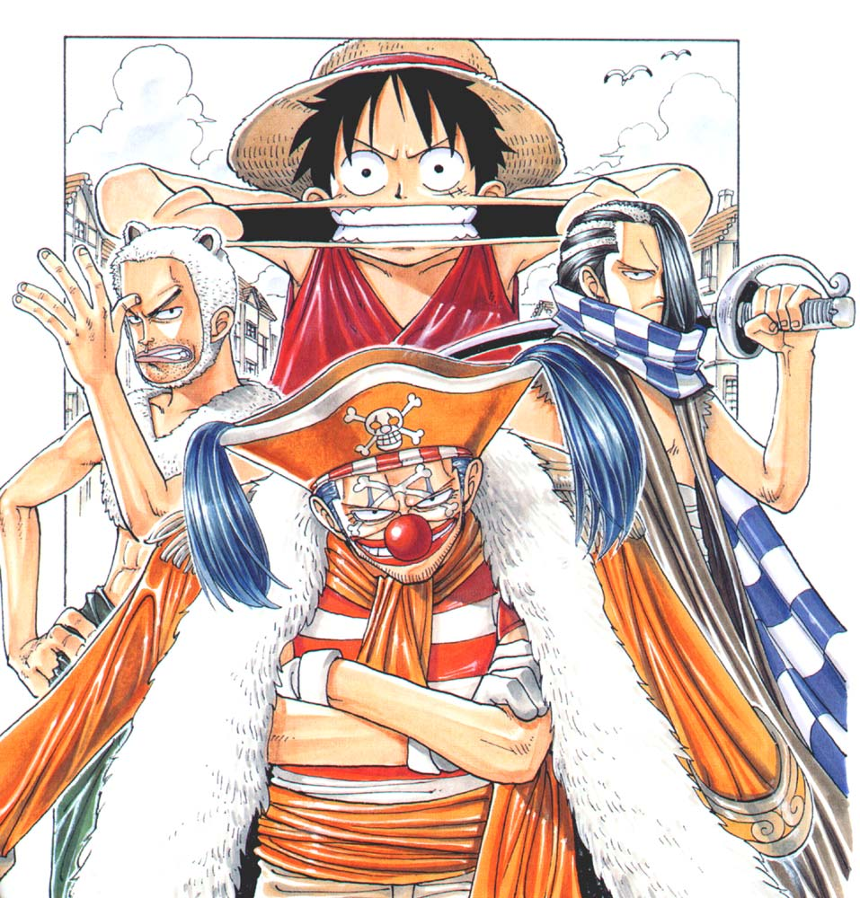
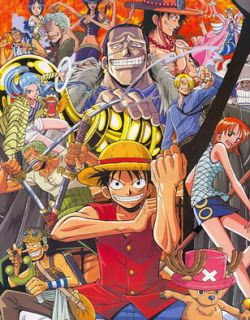
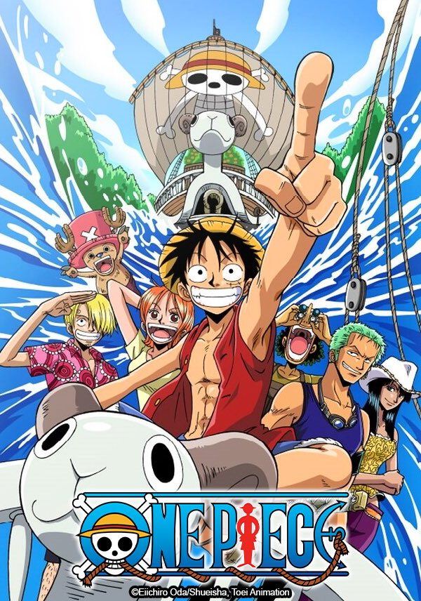
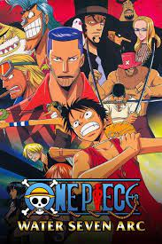
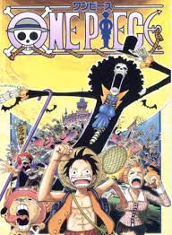
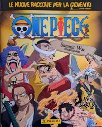
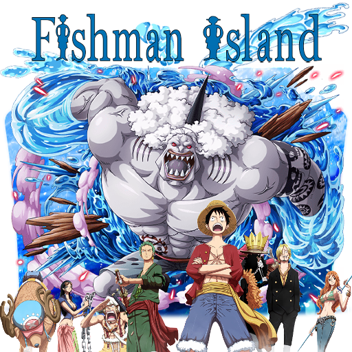
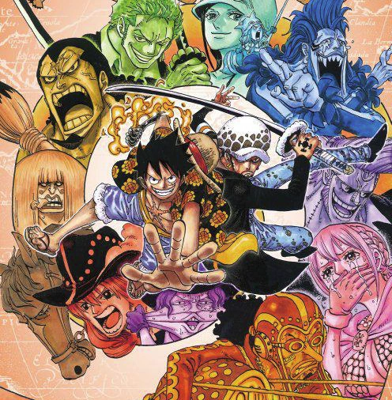
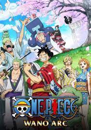

East Blue
Saga
Influenced by Shanks, Luffy starts his journey to become the Pirate King. At the beginning of his journey, he meets a boy named Koby, who wants to become a Marine. They reach Shells Town, where they meet corrupt Marine captain Axe-Hand Morgan, his son Helmeppo, and the pirate hunter Roronoa Zoro.

Arabasta
Saga
The crew, with Kureha's assistant Tony Tony Chopper, finally arrive at Arabasta, which is on the verge of civil war. Vivi must reach the rebels and tell them the real cause behind the conflict, but Crocodile, leader of Baroque Works and one of the Seven Warlords of the Sea, will not just stand by and watch.

Skypiea
Saga
Riding the Knock Up Stream, the crew finds themselves in the "White Sea", an ocean in the sky. The Straw Hats soon discover that there is a war between the Sky People and the natives who originally inhabited a place known as the Upper Yard. They also learn of the cruel God Enel.

Water 7
Saga
In search of a shipwright to join the crew, the Straw Hats land at the thriving metropolis of Water 7. Here, the crew falls apart as two members leave. To make matters worse, the Straw Hats are framed for the attempted assassination of Water 7's mayor, who is also president of the Galley-La Company, a shipbuilding company.

Thriller Bark
Saga
The Straw Hats continue their adventure out into the Florian Triangle where they come across a strange barrel which upon opening, sets off a flare. This soon turns into a nightmare when a ghost ship directs them to the haunted island of Thriller Bark, where ghosts, zombies and Warlord of the Sea Gecko Moria await them.

Summit War
Saga
Unable to rescue Ace before he was transferred, Luffy and his group of Impel Down escapees follow after him to Marineford. With time running out until Ace's execution, the Whitebeard Pirates and the World Government prepare their forces to clash in a battle that could drastically change the era.

Fish-Man Island
Saga
After two years, the Straw Hats are finally beginning their undersea journey to Fish-Man Island. When a local fortuneteller predicts Luffy destroying Fish-Man Island, the Straw Hats are falsely accused as criminals, and to complicate matters further, an alliance between Hody Jones and Vander Decken IX plots to take over the Ryugu Kingdom.

Dressrosa
Saga
The Straw Hats, Law, Kin'emon, and Momonosuke head to Dressrosa with a captive Caesar to broker a deal with Doflamingo, destroy his SMILE Factory, and free the samurai's comrade Kanjuro. They soon discover that both Doflamingo and Dressrosa are shrouded with many secrets, and Law's conflict with Doflamingo quickly turns personal.

Wholecake
Saga
Luffy's group travels to Whole Cake Island to retrieve Sanji from a political marriage between the Vinsmoke Family and the Charlotte Family. They are caught between the families' hidden agendas, and form an alliance with Jinbe, Caesar, and the Fire Tank Pirates to take down Big Mom and save the Vinsmokes.

Wano Country
Saga
The Ninja-Pirate-Mink-Samurai Alliance gather in Wano Country and prepare for the battle against the Beasts Pirates. The history of Kozuki Oden and his ties to Wano Country, Whitebeard and Gol D. Roger are revealed, and the alliance assaults Onigashima to take down the allied forces of Kaidou and Big Mom, all while alliances shift on all sides of the siege. Meanwhile, after the events during the recent Levely, the world goes through dramatic changes.